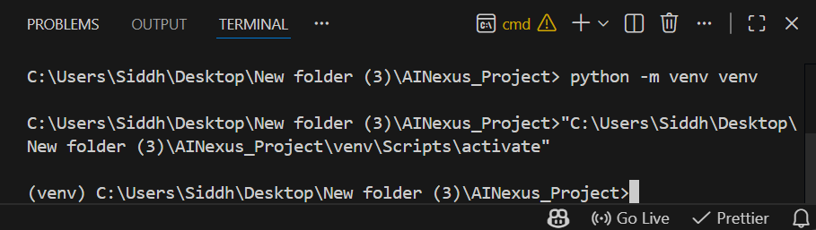

Session 1: The Architect’s Toolkit
Stop being a user and start being a Creator. Today, we build your professional AI laboratory.
Session Mission
By the end of this hour, your computer will be a professional AI workshop featuring a dedicated Virtual Environment, Git Version Control, and a verified AI Logic Engine.
1. The "CTO" Mindset
The Mission: This year, you are a "Co-founder." A CTO (Chief Technology Officer) doesn't just write code—they build systems that don't break.
THE IRON RULE
We never use the Global Python environment. Every AI startup we build must have its own isolated "Lab Tray" (Virtual Environment). This prevents your different projects from contaminating each other.
Prerequisites: Setting Up Your Heavy Machinery
Before we build, we must install the two core pillars of software development. Follow these instructions precisely.
Step A: Install Visual Studio Code
Visual Studio Code (VS Code) is where we write our novel (the code). Download and install it first. It is like a smart notebook for coding. We write our code here, and it helps us by highlighting mistakes, suggesting better code, and keeping everything neat. Think of it as a friendly helper that makes coding easier and faster.
- Go to code.visualstudio.com.
- Download for your OS (Windows/Mac) and run the installer.
- Boost your Editor: Once VS Code is open, click the Extensions icon on the left sidebar (looks like four squares) or press
Ctrl + Shift + X. - Search for "Python" and install the official extension by Microsoft. This gives VS Code a "Python Brain" to help you spot mistakes and write code faster!
Step B: Install Git
Git allows us to save “snapshots” of our work. It is like a time machine for your code. It saves your work step by step, so you can go back if something breaks or see what changed earlier. It also helps you work safely and share your code with others.
Important: During the Git installation, do not change any options unless we explicitly tell you to.
Most settings are already correct. On each screen, keep the default options selected, click Next, and click Finish at the end.
Now follow these specific choices carefully:
- Download from git-scm.com.
- Default Editor: Choose "Use Visual Studio Code as Git's default editor".
- PATH Integration: Choose "Git from the command line and also from 3rd-party software" (This is critical!).
- Line Endings: Windows users Choose Checkout Windows-style, commit Unix-style & macOS / Linux users Choose Checkout as-is, commit Unix-style

Step C: System Verification & Configuration
The Terminal (CLI) is where you type commands to the computer. Open your computer's Command Prompt (CMD) or PowerShell and run the following commands:
git --versionSuccess: You see a version number.

Failure: "command not found" means the installation path is broken—ask your instructor for help.
Setup your Co-founder Identity: Run these two commands with your details so Git knows who is writing the code:
git config --global user.name "Your Name"
git config --global user.email "youremail@example.com"Instructor Help: Setting up hardware can be tricky. If you get stuck on an installation screen or see red error text, stop and ask your instructor for a hand!
2. Setting up the Workshop (VS Code)

Open VS Code. Click "File" > "Open Folder" and select your AINexus_Project folder.

Ctrl + ` (backtick) inside VS Code to open the cockpit. This is where you talk directly to the machine.

3. The Virtual Environment (The "Lab Tray")
🛠 Activity: Activate Your Lab
Open the terminal in VS Code and activate your virtual environment.
Windows: venv\Scripts\activate
Mac / Linux: source venv/bin/activateSuccess Check: You should see (venv) at the start of the terminal line.
python -m venv venv
venv\Scripts\activate
source venv/bin/activate

🛠 Activity: Install AI Tools
With the virtual environment active, install the required AI libraries.
pip install openai langchainImportant: These libraries will be installed only inside this project lab.
4. Version Control (The "Save Point")
git init git add . git commit -m "Initial system setup"

5. The "Hello AI" Script
Before we build, we must verify that our AI libraries are ready for action.
import sys
try:
import openai
import langchain
ai_status = "INSTALLED & READY"
except ImportError:
ai_status = "MISSING (Run: pip install openai langchain)"
print(f"--- AI NEXUS SYSTEM CHECK ---")
print(f"Python Version: {sys.version.split()[0]}")
print(f"AI Libraries: {ai_status}")
print("Status: Virtual Lab is ACTIVE")
print("Ready for development.")

🛠 Activity: Save the Diagnostic Script
Now that the system check works, save this progress using Git.
git add main.py
git commit -m "Add AI environment diagnostic script"
Mission Diagnostic: Level 01
Verify your system configuration and engineering mindset before moving to the next mission.
1. Why is the "Iron Rule" of isolating Python environments so important for a CTO?
2. When you see "(venv)" at the start of your terminal line, what does it mean?
3. What is the primary role of Git in your AI Startup workflow?
4. Which Git command effectively "locks the time capsule" and labels your save point?
5. How does VS Code interact with Git once it is installed on your system?
Homework / Extension
Standard Task
Customize the print() statements in main.py to give your AI a name (e.g., "Jarvis" or "Nova").
Advanced Task
Create a .gitignore file and add the venv/ folder to it. Real engineers never back up their tools—only their code!
Standard Task – How to Do It
- Open
main.pyin VS Code. - Locate the existing
print()statements. - Modify them to include a name for your AI (example: “Jarvis” or “Nova”).
- Save the file.
- Run the script again using:
python main.py
- Confirm the AI now responds using its new name.
Advanced Task – How to Do It
- In your root project folder, create a file named
.gitignore. - Inside that file, add this line:
venv/
- Save the file.
- Run:
git status
- If
venv/no longer appears as untracked, your configuration is correct.
Why This Matters: Engineers commit only source code — never environment folders or secrets.
Did You Know?
The first computer "bug" was an actual bug! In 1947, a real moth got stuck inside a computer and caused it to crash. Today, your Virtual Environment and Git "Save Points" are your best defense against modern digital bugs!